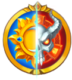
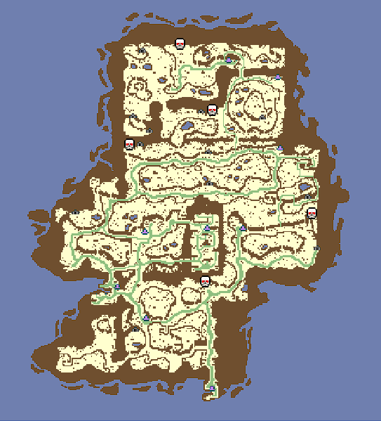
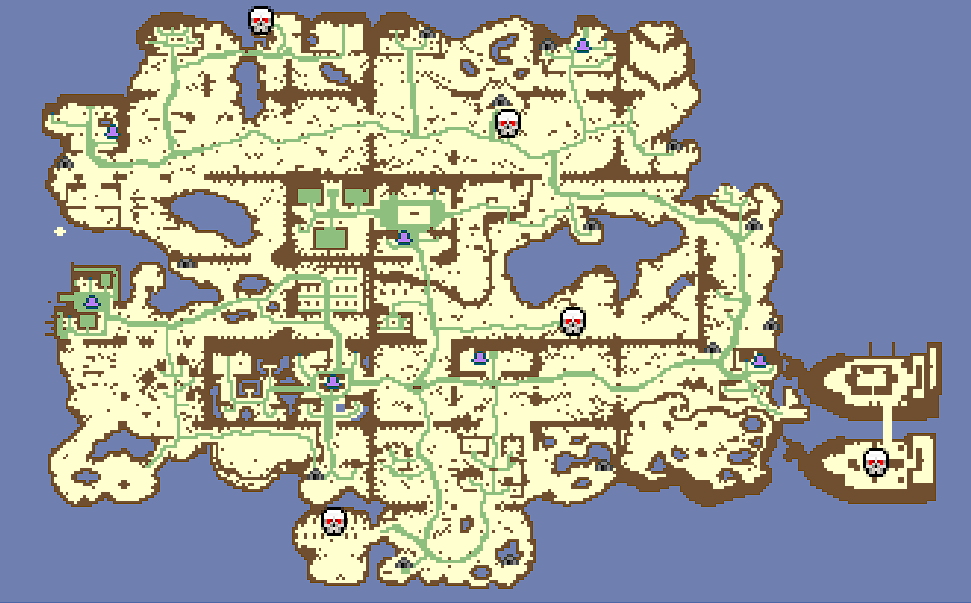
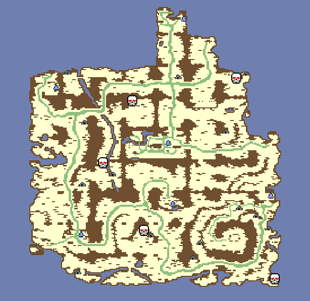
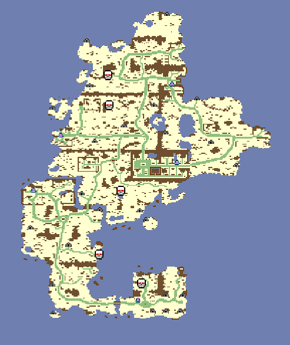

Mapas
 Legião


Godgorrath
Durante a Guerra da Lança os montanheses teriam erguido suas armas contra o exército do Condenado, que se intrometeu em suas terras,
mas Orin o Rei Condenado decidiu sabiamente que os Clãs da Montanha que odiavam elfos e humanos poderiam ter se tornado seus aliados.
Sua decisão foi correta - os melhores guerreiros das montanhas se juntaram à temível Legião. Derrotados na Última Batalha, os clãs da
montanha ficaram em silêncio por algum tempo.
Moraktar
Cinco séculos atrás, os Proscritos vieram para esta terra amaldiçoada após a Guerra da Lança, atraído por uma fonte inesgotável de
necromancia. Soldados da Legião vieram aqui, quebrados pelo exército dos Sentinelas ... Quebrados, mas não esmagados. Quase
quatrocentos anos o caos reinou nessas terras - feiticeiros, necromantes, centuriões contendiam Moraktar com exércitos e explosões
poderosas de magia negra. Isso poderia continuar indefinidamente, até que um dia a mão poderosa do Senhor Inominável não fosse
restaurada a ordem entre aqueles que desejavam um novo modo de vida, e não punisse aqueles que sequer pensam em resistir à sua
vontade.
Sentinelas
Melvendil
pós a vitória gloriosa sobre o exército do Rei Condenado Orin, os elfos não retornaram à Floresta eterna devastada pela guerra, onde
tinham sempre vivido desde o início. Eles habitaram as florestas do norte-oriental de Melwendil, as quais se tornaram uma ilha após a
Grande Ruptura. Até hoje, os Primogênitos cultuam Nuadu seguem estritamente o seu preceito - proteger qualquer vida. Os Druidas elfos
curam as feridas da Terra, causadas durante a Guerra da Lança, plantando novas florestas e salvando os antigos, enquanto os dançarinos
da lâmina e patrulheiros observam cuidadosamente as fronteiras de Melwendil por sinais de tribos das montanhas e mortos-vivos.
Langasard
Indo para o sul, você pode desfrutar de uma vista espetacular do campo. Os camponeses vivem aqui em abundância, as suas casas bem cuidadas
e as férteis terras aráveis são a melhor prova disso. Sem perceber, você se encontrará nos arredores de Oltgard - Capital dos Escolhidos,
fundada há cinco séculos, logo após sua vitória na Guerra da Lança. Os pináculos e torres da cidade se erguem, e a luz do sol, abundantemente
concedida por Harad, se espalha como mel dourado sobre os telhados das casas. Admire a beleza majestosa da Catedral - ministros da Santa Igreja,
dia e noite oram e cantam canções de natal.


Sentinelas Legião

Irselnort
A noroeste, em algum lugar do mar de Arinar, uma nova ilha “Irselnort” foi encontrada, cheia de quebra-cabeças e maravilhas. A ilha esconde muitos
segredos guardados por animais ferozes, bestas nojentas, ogros poderosos e centauros com pés. No coração de Irselnort, entre as Montanhas Cinzentas,
está uma fortaleza fortemente protegida. Foi construído por Berengar, o melhor feiticeiro de sua época, há muitos séculos. A rica história dos clãs
da montanha começou aí, unidos pelo poder de Berengar. Irselnort ainda se lembra dos dias da Guerra de Lança e do desastroso Grande Rompimento, cujas
feridas ainda permanecem no mundo. As erupções do vulcão despertado tornaram a parte norte da ilha quase inadequada para a vida. Apenas os comerciantes
da Liga conseguiram construir uma cidade lá.
Sentinelas Legião

Pântanos de Norlant
Arinar está mergulhado no fogo e na fúria da milenar Guerra da Lança. Os heróis emergem das cinzas todos os dias, exploram o imenso mundo,
enfrentam chefes perigosos e lutam por duas alianças poderosas - os Sentinelas e a Legião.
É hora de escolher um lado, ficar ao lado de seus amigos e se opor a seus inimigos com todo o poder da habilidade, metal e magia para mudar o
equilíbrio de poder e começar o novo capítulo na história de Arinar!